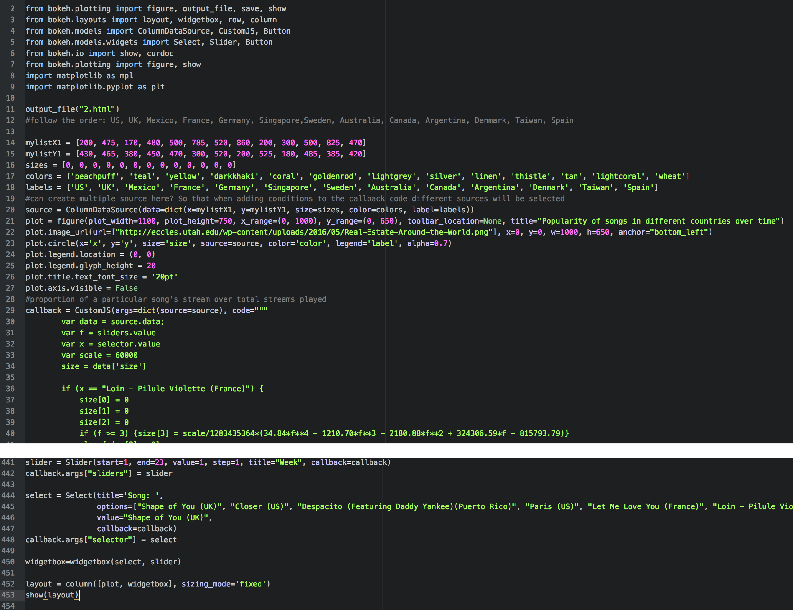
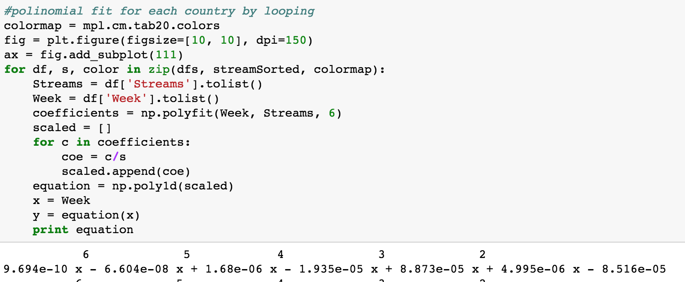
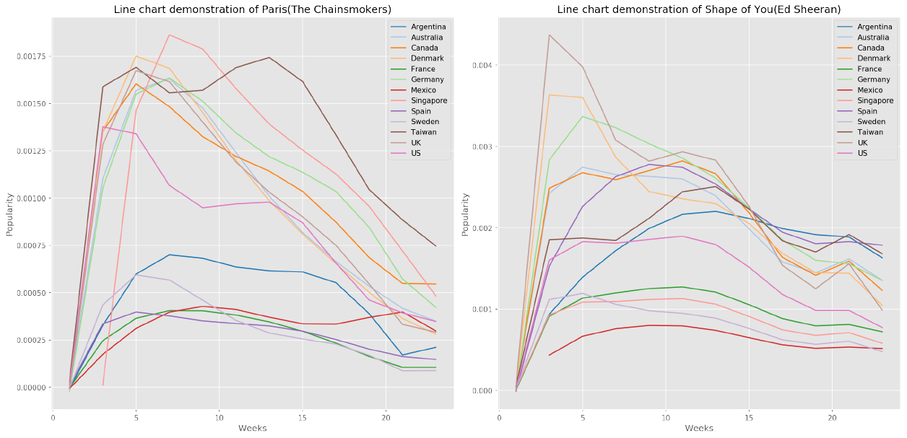
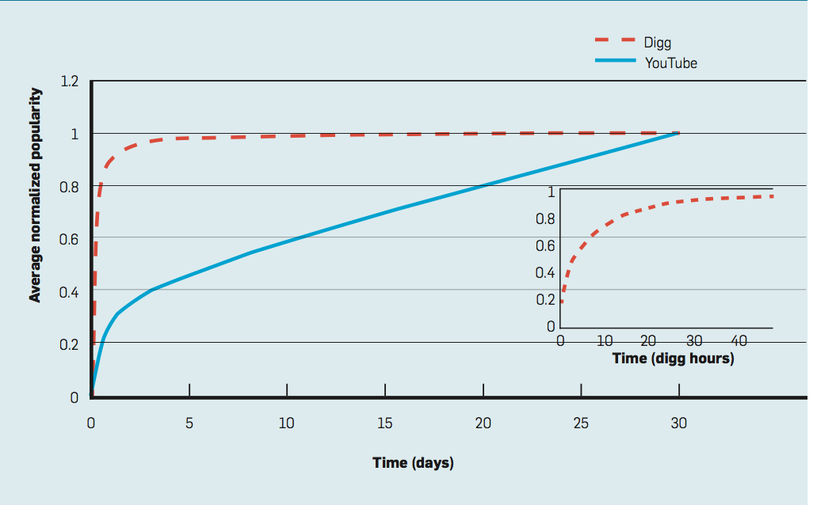

Global analysis
User Manual
On the world map above, you can choose a song from the drop-down list and drag the time bar to see the changes of the song’s popularity over time. Some useful tips:
1. The most popular songs from each country/region are selected, since they would be the most representative ones of the local music culture.
2. On the map, each bubble is located at the corresponding country, but to avoid confusion due to the overlapping bubbles, we also colour them differently and attached a legend showing the corresponding countries.
3. A song’s “popularity” is denoted by its total number of streams played in a week divided by the total number of streams played in one country in the first 6 months of 2017. For example, the song Paris by The Chainsmokers was played 2,077,659 times in the third week of 2017 in UK, and the total number of streams in UK was 1,668,326,300, so 2,077,659/1,668,326,300=0.0012 is its popularity in the third week of 2017 in UK. We normalised the data because streams played on Spotify may be influenced by its local number of users and local population.
Methodologies
Our first objective is to identify the major global trends in music streaming in order to observe the patterns of propagation of songs and determine the major “exporters” and “consumers” of music.
To do so we downloaded Spotify’s weekly top 200 charts for each country for the first 6 months (23 weeks) of 2017 – we decided to observe the variation over the course of 6 months as we found it was the maximum lifespan of a song in the top charts. We then merged them into one .csv file using a useful Python library: glob, which identifies files that have the same format in a directory:

Dataset sample and the glob library that helped import files
We then cleaned the data and used it to plot the spatial and temporal evolution of the most popular songs from each country and visualize it on an interactive world map. This is the most difficult part of our visualization – an interactive interface requires much more techniques than creating static visualizations like bar and pie charts. We found a Python library that satisfies our requirements: Bokeh. It can create widgets like drop-down lists and slide bars that control the visualization, and generate a html file that could be embedded in a website. We combined it with the Numpy function polyfit() and poly1d() that generate the polynomials (an example of "polynomial" is given below) that best fit the temporal evolution of the popularity from our data, and create an interactive bubble map showing the spatial difference and temporal evolution of the songs. Visitors of our website could play with it on the top of this page.

The Bokeh programme section

The Polyfit and Poly1d functions, with the polynomial printed
Results and Analysis
On the global level, our purpose is to reach general conclusions, which will be used as the induction and inspiration of our next two stages of research. It is quite obvious that Shape of You was definitely the “winner” in 2017, but there are some more patterns and features that worth exploring. This interactive map shows songs’ popularity in different countries at different time, and thus we conclude the features as the evolution (popularity along time) and propagation (popularity over countries) of songs and analyze them separately.
Evolution
For most of the songs, their popularity of experiences a sharp increase after their release, and there is almost no lag in the increase of the popularity of songs – nearly all countries responded to a song as soon as it was released. However, interestingly, reactions to a song after it had reached its peak of popularity are quite different. We generated line charts that help explain this phenomenon (see below).

Line charts showing songs' evolution
In general, the decrease of songs’ popularity is much smoother than their increasing trend, while sometimes it may even remain at a certain level for a long time. Szabo and Huberman (2010) derived a model that shows the patterns of popularity of different online contents (see below), which is similar to our Spotify music evolution pattern. Both of their patterns follow an approximate logarithmic trend, namely, the increase of popularity is fairly quick, while the popularity could remain “saturated” or decrease pretty slowly. Szabo and Huberman’s research objects are YouTube videos and online forum submissions, which could be slightly different from Spotify; therefore, we tend to be cautious on applying this model to Spotify music. However, the most notable feature of Szabo and Huberman’s research object remains in Spotify music: the popularity of music saturates more quickly than it loses its popularity.

Szabo and Huberman's model
Propagation
Generally speaking, a trend of musical globalization could be observed on this map – almost every song in the drop-down list could find its position at different countries and regions, which could be attributed to the increasingly popular way of music consumption, online streaming, which provides more accessibility and availability to all countries around the world, eliminating the barriers or lags created by distance (for example, a song from the US could be accessed in Taiwan almost at the same time). Nevertheless, songs from different regions and countries still follow quite different propagating patterns: songs from US, UK and Canada are the most popular around the world, which transmit broadly and deeply around the world, while Latin American music is restricted to their local listeners – even Despacito, which enjoyed tremendous popularity in 2017, has much more popularity in Latin American countries than any other regions. Asian music, at least on Spotify, has no market in the western world, only consumed in the local countries; however, considering that most Asian countries have their own music platform, and some popular musical trends from Asia, such as K-pop and J-pop, is gaining its popularity in the west in recent years, we need more research into Asian music.
The most distinct propagating pattern lies in Europe, which is worth being discussed separately. There are two types of music from European countries: those in English and those in local languages, which perform totally differently: the former transmit further and deeper around the world, while the latter are limited locally. We came across an article by Bekhuis, Lubbers and Ultee (2014), who found that the popularity of European songs domestically has been increasing since 1990s, while the Americanization of music due to the economic dominance of America is not obvious in Europe. Their findings might seem true in terms of the number of streams played – European music is consistently gaining its market globally, which forms a “resistance” to American culture; however, they did not take the language into account. As we discovered, English songs from Europe is apparently more popular than those in local languages: European music might be resisting “Americanized market” by producing “Americanized music”.
The findings of our global analysis, especially the propagation of music, prompted us to consider our research in more details: what are the specific situations in individual countries? Why does some music popular in one country while less welcomed in another? Thus, we conducted specific data visualizations and analysis locally and found out more patterns there. To see that, proceed by clicking “Phase 2”.